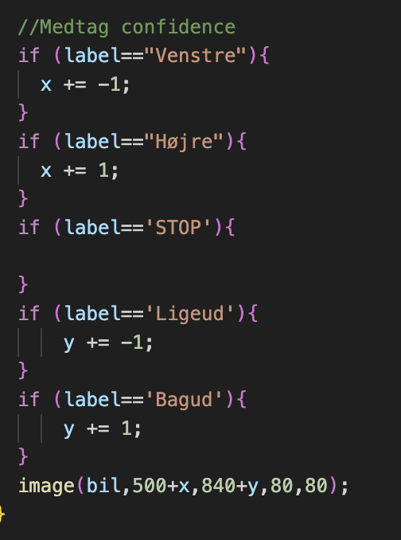

Vi har i undervisningen arbejdet med Machine Learning og AI.
Vi har her set på de grundlæggende forskelle mellem traditionel kodning og kunstig intelligens (AI).
Traditionel kodning indebærer, at udvikleren manuelt skriver koden fra bunden og har fuld kontrol over hele udviklingsprocessen, inklusive design og implementering.
Man har detaljeret viden om, hvordan koden fungerer, og kan nemt foretage ændringer eller rettelser.
Kunstig intelligens, også kaldet Black box kodning, indebærer derimod kodning uden detaljeret kendskab til dens interne funktion.
Udvikleren fokuserer kun på inputs, outputs og den forventede funktionalitet af softwaren, mens den relle kode, som laver outputtet er skjult for programmøren og betragtes som en "sort boks", deraf Black Box kodning.
Prøv min Teachable Machine, som kan bestemme om man laver sten, saks eller papir!
Klik her!
Jeg har også lavet en model af en selvkørende bil med Villas fra 2022f. Prøv den her:
Selvkørende Bil
(Kræver at man har de røde skilte vi brugte i timen)
De kan downloades
her
og
her!
Eksempel på kode:

Her ses noget af koden for vores selvkørende bil. Det er denne del af koden der får vores bil til at bevæge sig på skærmen.
Vi har her lavet en "if-løkke", som bestemmer bilens position.
Hvis vi bare tager udgangspunkt i det øverste if-statement, kan det ses at der bliver spurgt: "Er label = Venstre", altså mener vores model at det er pil til venstre, som fremvises.
Hvis dette er tilfældet skal der trækkes 1 fra
{kind=link}
{kind=link}